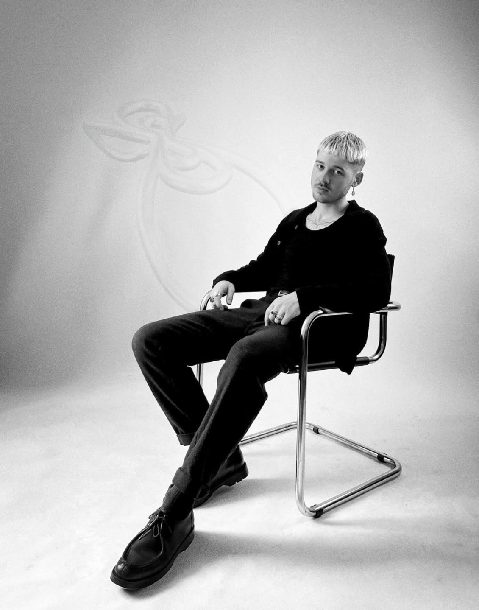
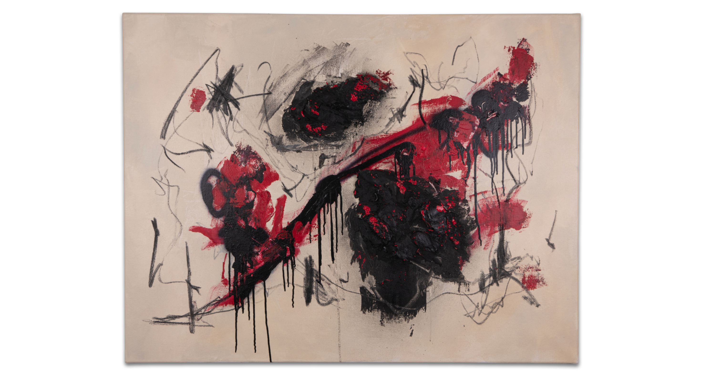
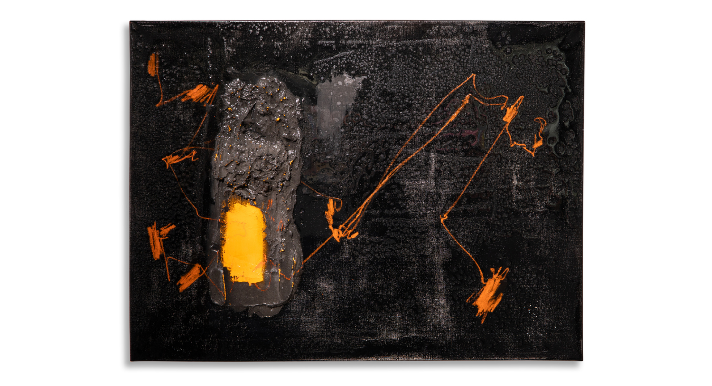
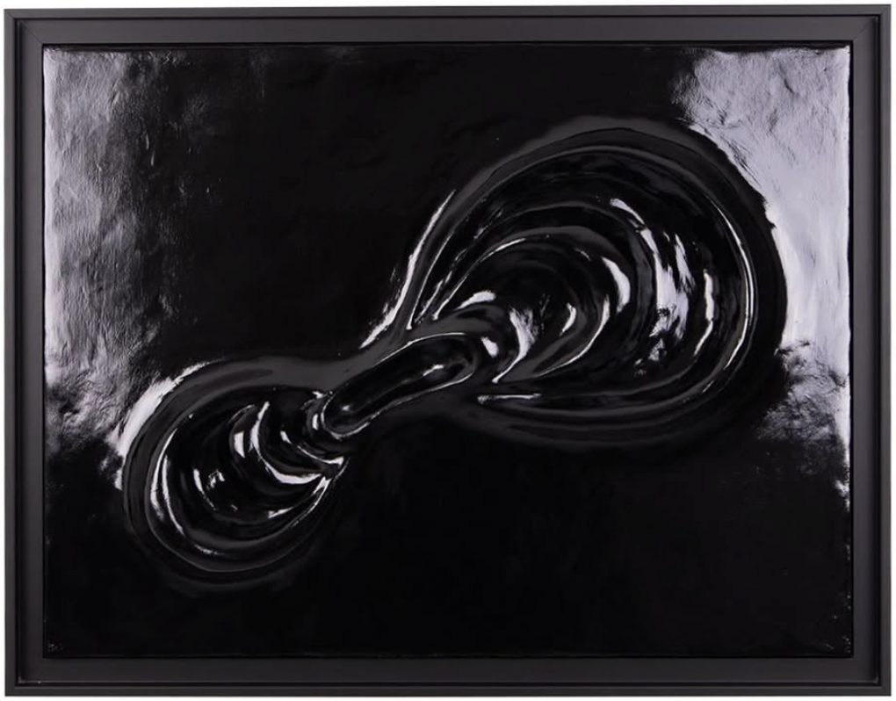

Clément Lameley
About the artist
Profession: Painter
Clément Lameley (born in 1998 in La Roche-sur-Yon, France) is a painter who also works in sculpture and drawing. He combines traditional techniques such as oil painting, acrylic, airbrush, charcoal and oil pastel with construction materials, mortar adhesive, expanding foam, spray paint and epoxy resin, applied in thick layers on canvas and developed into volume.
His work is a continuous exploration of line and curve, pursued through painting, drawing and sculpture. Each new series extends this same reflection.
Clément Lameley studied at Université Rennes 2 and worked as a production assistant for Fabrice Hyber in 2024. He presented his first solo exhibition in La Roche-sur-Yon in 2025. He lives and works today in La Roche-sur-Yon, France.

Works


